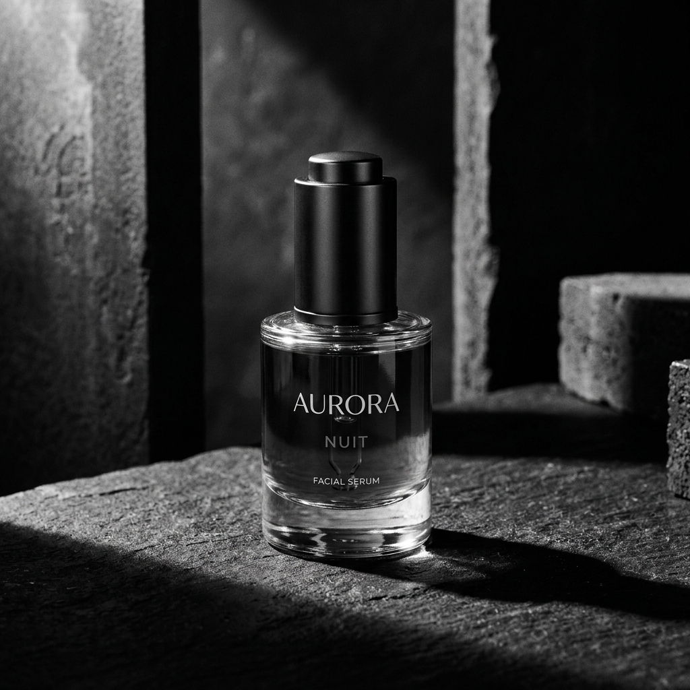
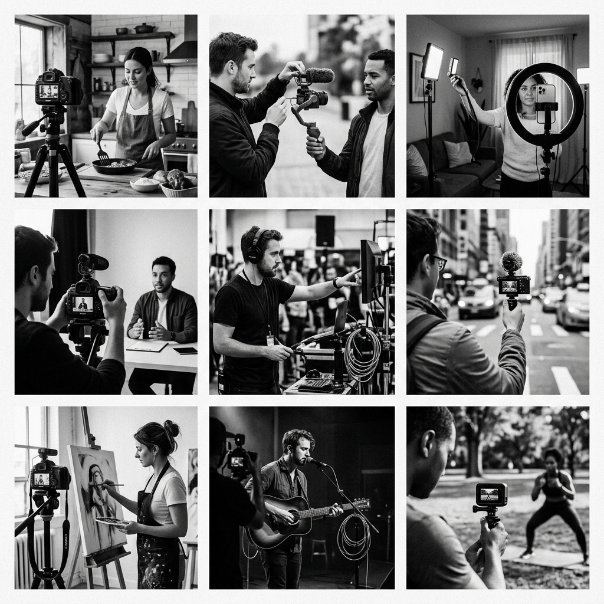

Product Launch Campaign
Campaign Overview
A multi-layered acquisition campaign built to launch a premium organic skincare product line. By aligning macro lifestyle associations with tight retargeting and customer purchase incentives, we managed to scale sales swiftly.
Objective
Introduce the new skincare line to urban professionals, drive conversion traffic directly to the digital storefront, and establish brand confidence that justifies a premium pricing model.
Target Audience
Self-care conscious consumers aged 20 to 35 seeking premium, organic, and clean cosmetics. These users respond to product textures, ingredient transparency, and authentic peer testimonials rather than standard ad formats.
Strategy & Creative Direction
The campaign was executed in two distinct stages. Stage 1 focused on visual sensory stimulation: macro product texture shots, clean geometry, and high-end styling. Stage 2 introduced micro-creator feedback loops and quantitative results (e.g. skin hydration data) overlaying clean grids.
Channel & Platform Mix
Meta advertising (Facebook & Instagram) was utilized heavily for retargeting and purchase conversions (40%), TikTok served for top-of-funnel engagement triggers (40%), and email funnels reactivated warm community pools (20%).
Learnings & Optimization
Video assets showing immediate absorption rates outperformed product-styling layouts by 32%. A minimal, high-contrast black-and-white visual frame layout for conversion ads drove lower cost-per-click compared to standard brand colors.
Campaign Visuals

